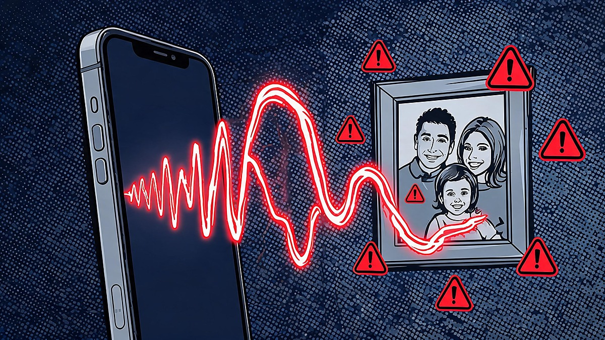
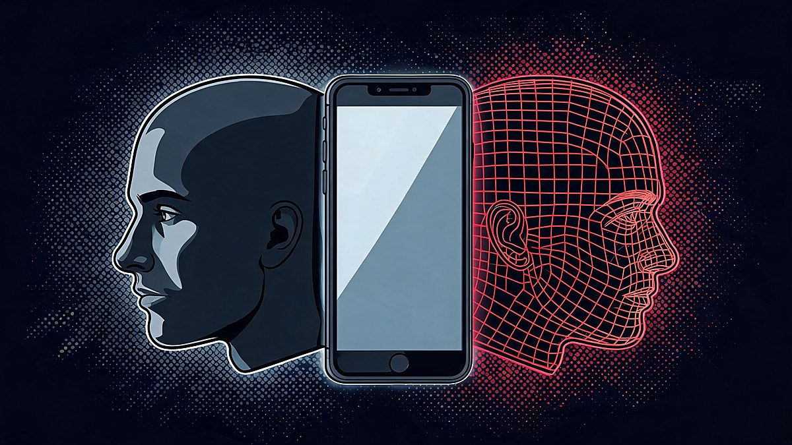
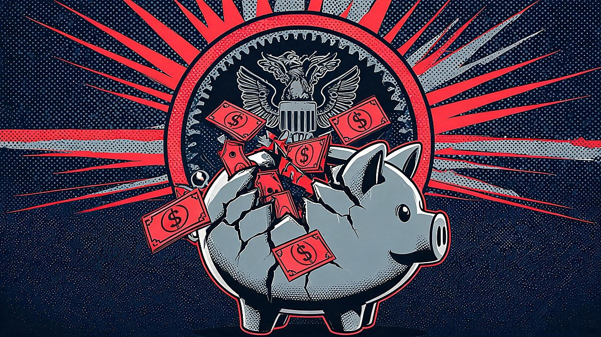
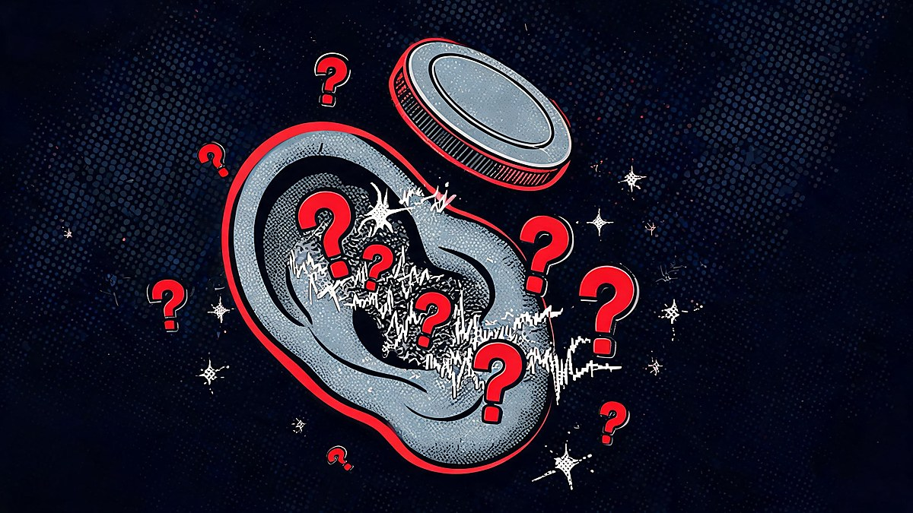
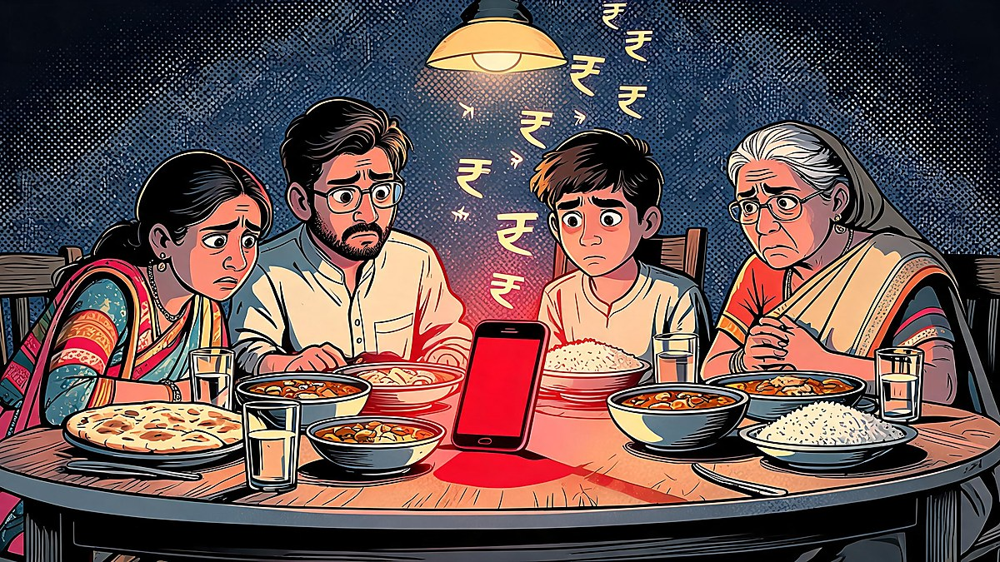
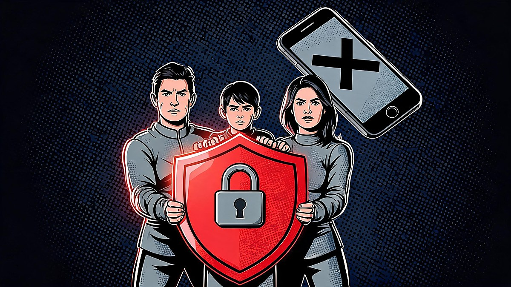
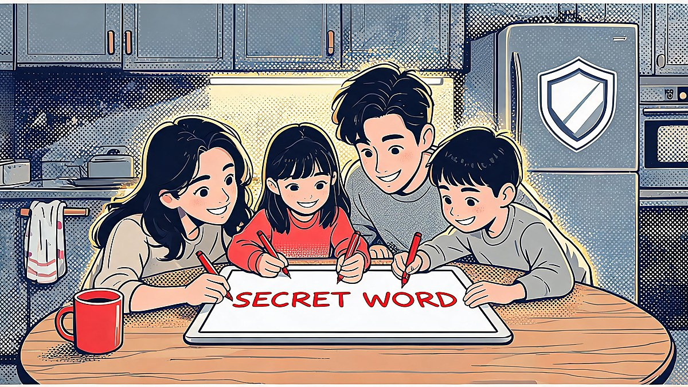

AI Voice Cloning Scams: How to Spot Them and Protect Your Family

The honest starting point is that your ears cannot save you - process can. The query everyone is typing - "ai voice cloning scams: how to spot them and protect your family" - now has hard numbers behind it: the FBI logged nearly $900 million in AI-powered scam losses in 2025, Indian adults are hit at double the global rate, and peer-reviewed research now shows humans identify cloned voices barely better than a coin flip. This guide explains exactly how the scam works, what the verified numbers are, and - more usefully - the six defenses that work even when the voice sounds perfect.
The mechanics are brutally simple. Scammers harvest a few seconds of audio from a social media reel, a voicemail greeting or a YouTube video; free or cheap tools clone the voice; and a caller who sounds exactly like your child, parent or CEO asks for urgent help - bail money, a hospital deposit, a wire transfer, a gift-card code. The only reliable defense is a verification step that happens outside the phone call, because inside the call, the science says, you are guessing.
Quick answer: AI needs just 3 seconds of audio to clone a voice (McAfee). AI-powered scams cost Americans $893M in 2025 (FBI IC3 data), elder fraud rose 43%, and India may be the worst-hit country - 47% of Indians know a victim, 83% of victims lost money. Humans detect cloned voices only ~50-60% of the time (Nature) - so never trust the voice alone: hang up, call back on the known number, verify with a family safe word, and in India dial 1930 within the golden hour if money has moved.
Table of Contents
- The short answer
- How I built this guide: three tests
- How the scam actually works
- The numbers: $893M and the fastest-growing fraud
- Your ears can't catch it: the detection science
- Who gets targeted - and why India is hit twice as hard
- The 6 defenses that actually work
- If it already happened: the golden hour
- The strongest counterargument, answered
- What to do this weekend
- FAQs
- The Bottom Line
The short answer
AI voice cloning scams work because they attack the one verification system humans trust instinctively - the sound of a familiar voice - and that system is now scientifically unreliable: studies find people correctly identify AI-generated voices only about 50-60% of the time. The scams cost Americans roughly $893 million in 2025 per FBI data, they are the fastest-growing fraud type against older adults, and India leads the world in exposure. What works is boring and procedural: hang up and call back on the number you already have, agree on a family safe word before any emergency exists, keep your public audio footprint small, and report within the first hour if money moves - that is when banks and the 1930 helpline in India can still freeze the trail.
How I built this guide: three tests
I applied three tests before any claim made it into this guide. First, the primary-source test: loss figures came from the FBI's Internet Crime Complaint Center reporting and named surveys (McAfee's India study), not from aggregator blogs - and where only a vendor estimate exists, the text says so. Second, the science test: the detection numbers come from peer-reviewed work, including a 2025 Nature-published study, because "trust your gut" advice fails exactly when the gut is being spoofed. Third, the actionability test: every defense recommended here is free, works today, and is endorsed by a government regulator - the FTC, the FCC, or India's cybercrime portal - not by a company selling a product.
Two popular pieces of advice failed these tests and were dropped. "Listen for robotic pauses" is contradicted by the detection research - modern clones carry emotion and urgency. And "use a voice-detection app" has no independent validation for consumer calls; the regulators' own guidance skips it entirely. What remains is the short list that authorities actually publish.
How the scam actually works
The attack runs in four steps, and understanding them shows exactly where to break the chain. Step one is harvesting: the scammer could collect a short clip of the target's voice - an Instagram reel, a YouTube video, a voicemail greeting, a podcast appearance. Step two is cloning: consumer tools now need as little as three seconds of clean audio to produce a convincing replica, per McAfee's research. Step three is the script: the cloned voice calls a family member or colleague with an emergency that demands urgency and secrecy - an accident, an arrest, a hospital deposit, a stuck wire transfer, a confidential deal for the CEO. Step four is the squeeze: payment is demanded through channels that are hard to reverse - gift cards, wire transfers, crypto, or UPI transfers to mule accounts.
The emotional engineering is the real weapon. The call arrives at an odd hour, the "voice" is crying or panicked, background noise suggests chaos, and the caller begs you not to tell anyone "because of what happened." Every element is designed to shut down the verification instinct. The counter is equally simple and it must be agreed on in advance: the emergency is never verified inside the emergency call - you hang up and call the person back on the number you already have, no matter how real it sounds.

How much audio do scammers need to clone a voice?
As little as three seconds of clean speech, according to McAfee's research on consumer voice-cloning tools. Longer samples improve quality, but the barrier is effectively zero for anyone whose voice exists publicly - a Reel, a TikTok, a webinar recording, a voicemail greeting. This is why the audio footprint matters: every public clip of your voice is raw material for someone else's clone, and the people most at risk are those whose families post the most.
The numbers: $893M and the fastest-growing fraud
The scale is no longer hypothetical. The FBI's Internet Crime Complaint Center data shows AI-powered scams - deepfakes, voice cloning and AI-written phishing - cost Americans roughly $893 million in 2025 across 22,364 reported complaints. The same reporting cycle showed Americans over 60 lost approximately $7.7 billion to cyber-enabled fraud overall, up 37% year over year. Elder fraud specifically rose 43% to $4.89 billion in 2024, with voice cloning named as a primary accelerant. The FCC issued a fresh advisory in April 2026 warning that grandparent scams have become "more sophisticated" - regulator language for: the old defenses are failing.
India is the global epicenter by exposure. McAfee's India survey found 47% of Indian adults have experienced or know someone who experienced an AI voice scam - nearly double the 25% global average - and 83% of Indian victims reported losing money, with 48% losing more than ₹50,000. Victim loss bands cluster between $500 and $3,000 in US reporting, with sustained-extraction cases running far higher. Behind every number is the same play: the voice was real enough, the story was urgent enough, and the verification step never happened.

Your ears can't catch it: the detection science
The most important finding for families is the one almost no guide leads with: listening carefully does not work. A 2025 Oxford-affiliated team's study published in Nature found that human participants cannot consistently identify recordings of AI-generated voices - participants misjudged both real and synthetic clips at close to chance levels. Follow-up research puts correct identification of AI voices at roughly 50-60%, and one oft-cited comparison describes human detection as "as good as a coin toss." The 2025 PLOS One figure of 58% sits in the same band. The scam's power is not that the clone is perfect; it is that the clone is good enough while you are panicked.

Can you tell an AI voice from a real one?
Usually no - and that is the point. Peer-reviewed studies (Nature 2025; PLOS One 2025) put human accuracy at roughly 50-60%, meaning the voice itself carries almost no reliable signal for a listener under stress. Modern clones reproduce emotion, urgency and even crying. This is why every regulator - the FTC ("don't trust the voice"), the FCC, India's cybercrime portal - anchors its advice on verification outside the call: call back on a known number, use a pre-agreed safe word, confirm with another family member. Detection-by-ear is a 2021 strategy for a 2026 threat.
Who gets targeted - and why India is hit twice as hard
The targeting logic follows exposure plus emotion. Older adults are the classic grandparent-scam target, and the FBI's own numbers show the 60-plus cohort losing $7.7 billion to cyber-enabled fraud in a single year. But the fastest-growing segment is everyone with a public voice: creators, professionals, students - anyone whose voice lives on social media. The FBI's Apr 2026 release and the FCC advisory both describe the same broadening: family-emergency scripts now clone younger relatives precisely because younger relatives post more audio.
India stands out in the data. McAfee's survey put Indian exposure at 47% versus a 25% global average, with 83% of Indian victims reporting money losses.
Where the stolen money goes - and which defenses banks may deploy
Following the money explains why recovery is a race. Stolen funds move through mule-account chains within minutes, and US reporting shows losses concentrating between $500 and $3,000 per victim - small enough to evade personal-transfer limits, large enough to scale across thousands of targets. The US BLS has no occupation code for "scammer," but the industrialization of fraud - scripting tools, voice banks, autodialers - means defenses must be procedural rather than personal. Oxford-affiliated researchers studying detection reached the same conclusion from the other direction: when humans identify synthetic speech at coin-flip rates, the only reliable intervention is architectural.
The 6 defenses that actually work
83% of Indian victims losing money - and India-specific variants carry local flavors: the "KBC lottery winner" call that borrows a famous TV host's voice and brand, courier-and-customs scripts, and UPI-based collection through mule accounts that makes recovery a race against time. The structural driver is volume: India's social-media audio pool is enormous, English-plus-Hindi cloning is cheap, and phone-first payment rails make irreversible transfers instant. The defense section below works the same in both countries, but reporting differs - and in India, the first hour is decisive.
The 6 defenses that actually work
Every defense below is free, regulator-endorsed, and works even when the clone is perfect - because none of them relies on detecting the fake by ear.
| Defense | How it works | Why it beats the clone | Source |
|---|---|---|---|
| Call-back verification | Hang up; call the person on the number you already have - never a number the caller gives you | The clone can only answer the line it called you on; the real person answers their own phone | FTC consumer alert |
| Family safe word | A random phrase known only to family; any emergency caller must say it unprompted | The scammer's script cannot know it; silence = scam | FCC advisory (Apr 2026) |
| Challenge questions | Personal questions only the real person answers (not birthdays - those are public) | Same logic as safe word, works for extended family and staff | FCC / bank guidance |
| Generic voicemail | Remove your own voice from voicemail greetings | Removes the easiest harvest source on your own phone | FCC consumer tips |
| Bank guardrails | Transfer limits, 24-hour delays for new payees, transaction alerts | Slows the squeeze step; banks can freeze recalled transfers | Bank fraud guidance |
| Family drill | One 15-minute conversation: what a scam call sounds like, what we always do | The pause-and-verify reflex must exist before the call arrives | FTC/FCC combined advice |
Two additions worth noting: keep your public audio footprint small (lock down old Reels where practical, avoid posting children's voices), and treat any payment demand that arrives only via call as hostile by default - legitimate institutions do not need gift cards, crypto, or "urgent" UPI transfers to a new account.

If it already happened: the golden hour
Speed decides recovery. In India, call the cybercrime helpline 1930 immediately or file at cybercrime.gov.in - reporting inside the first hour likely lets the system freeze the fraudster's account before funds are layered out through mule chains, per the Indian Cyber Crime Coordination Centre's own guidance. Preserve everything: the phone number, UPI/transaction IDs, screenshots, call times. In the United States, report to reportfraud.ftc.gov and ic3.gov, notify the bank's fraud line in parallel, and file a police report for insurance and documentation. Families outside India should check their country's equivalent - the principle is universal: report within the hour, freeze the rails, preserve the evidence.
Which is the cybercrime helpline number in India?
1930 - the National Cyber Crime Reporting Portal helpline (cybercrime.gov.in), operated under I4C, the Home Ministry's cybercrime coordination center. Calling 1930 promptly after a financial fraud triggers the complaint chain that can freeze the receiving account before stolen funds are withdrawn - which is why the first hour is called the golden hour. For non-financial cyber complaints, the same portal handles online filing; preserve the scammer's number, payment references, and call timestamps before reporting.
Key takeaway: The scam's engine is urgency plus a voice you trust - so the defense must live outside the call. A safe word agreed this weekend, a call-back habit on saved numbers, bank guardrails, and the 1930 number saved in India are worth more than any detection app, because the research is clear: by the time your ears notice something, the clone has already done its job.
The strongest counterargument, answered
The strongest counterargument says this guide overcorrects: "people are smart, my family would never wire money to a voice, and these panic guides just scare grandparents." There is a legitimate kernel here - fraud reports can overcount by lumping AI-assisted scams with classic phone cons, and fear-based coverage sells. Some readers also argue that detection tools will soon solve what human ears cannot.
The response is that every layer of that argument fails against the published record. The FBI's $893M and the 43% elder-fraud rise are measured losses, not modeled fears; the FCC issued its "more sophisticated" grandparent-scam advisory in April 2026 precisely because awareness has not kept pace with capability; and the detection-tool promise remains unproven for consumer calls - no regulator recommends one, and the peer-reviewed human-accuracy studies (50-60%) show why the burden cannot sit on the listener. As for "my family would never": the median victim did not think so either, and the script is engineered for exactly the people who feel immune. The guide's posture is deliberately unheroic - assume the voice is real-sounding, verify through channels the scammer cannot touch, and the scam loses its entire engine.

What to do this weekend
Fifteen minutes of setup beats a hundred alerts later. The complete family protocol, in order.
- Set the safe word - random, unrelated to birthdays, pets or addresses; every family member memorizes it; the rule is "any caller claiming family emergency must know it without prompting."
- Save the call-back numbers - each other's numbers saved under real names; the rule is "we call back on the saved number, never on the number that called us."
- Scrub the audio footprint - generic voicemail greetings; review public reels/videos containing children's or parents' voices; set profiles to private where feasible.
- Turn on bank guardrails - transfer limits, new-payee delays, transaction alerts; elders get a trusted second contact on the account.
- Save the reporting lines now - India: 1930 and cybercrime.gov.in; US: reportfraud.ftc.gov and ic3.gov; a contact card in the family group chat.
- Run one live drill - someone places a fake "emergency" call this week; the family practices hang-up, call-back, safe word. The reflex only exists if it is rehearsed.
FAQs
?How much audio do scammers need to clone a voice?
As little as three seconds of clean speech, according to McAfee's research on consumer voice-cloning tools. Longer samples may improve fidelity, but the practical barrier is likely effectively zero for anyone whose voice appears in a public reel, video or voicemail greeting. This is why limiting your public audio footprint - generic voicemail greetings, private profiles - is one of the six core defenses.
?Can you tell an AI voice from a real one?
Usually not. A 2025 Nature-published study found humans cannot consistently identify AI-generated voices, and follow-up research puts accuracy at roughly 50-60% - close to a coin flip. Modern clones reproduce emotion, urgency and crying, which is precisely what emergency-scam scripts exploit. This is why regulators advise verification outside the call (call-back on a known number, family safe word) rather than listening for tells.
?How much money have people lost to AI voice scams?
FBI Internet Crime data shows AI-powered scams - deepfakes, voice cloning, AI-written phishing - cost Americans about $893 million across 22,364 complaints in 2025. Elder fraud losses rose 43% to $4.89 billion in 2024, with voice cloning a named accelerant. In India, McAfee's survey found 83% of voice-scam victims lost money, with 48% losing more than ₹50,000; US victim losses commonly cluster between $500 and $3,000, with sustained-extraction cases running far higher.
?What is the safest thing to do if you get a suspicious call from family?
Hang up and call the person back on the number you already have saved - the FTC's core advice is "don't trust the voice; call the person who supposedly contacted you and verify." Ask for the family safe word if you have one; contact another family member through a different channel; and never make a payment, share an OTP, or move money based on a call alone, no matter how real the voice sounds or how urgent the story is.
?What is a family safe word and how do we set one up?
A safe word is a random phrase that only your family members know, agreed in advance and used to verify identity during any claimed emergency. Good safe words are unrelated to birthdays, pets, addresses or anything posted online. The rule: any caller claiming to be family in crisis must produce the safe word without prompting; if they cannot, hang up and call back on the saved number. The FCC's April 2026 advisory on sophisticated grandparent scams lists exactly this protocol.
?Which is the cybercrime helpline number in India?
1930 - the National Cyber Crime Reporting Portal helpline, part of the Home Ministry's I4C initiative, with online filing at cybercrime.gov.in. Calling 1930 within the first hour of a financial fraud is critical: the complaint chain can freeze the receiving account before stolen funds are withdrawn through mule accounts. Preserve the caller's number, transaction or UPI reference IDs, and call timestamps before reporting.
?Where do scammers get your voice clips?
From anywhere your voice is public: Instagram reels, TikTok and YouTube videos, podcast appearances, webinar recordings, WhatsApp voice notes forwarded outside the family, and - easiest of all - your own voicemail greeting. Three seconds of clean speech is enough to start a clone. The mitigation is footprint control: generic voicemail greetings, private profiles, and thinking twice before posting children's or elderly relatives' voices publicly.
?Are businesses targeted by AI voice scams too?
Yes - the corporate variant is CEO fraud or vishing: a cloned voice of an executive calls finance staff demanding an urgent, confidential wire transfer or gift-card purchase. The defenses mirror the family protocol: call-back verification on saved numbers, dual-approval rules for any payment instruction received by phone, and trained challenge questions for finance teams. The FBI's cyber-fraud reporting includes this category, and the same outside-the-call verification principle defeats it.
The Bottom Line
AI voice cloning scams industrialized a con that used to need a nervous impersonator: three seconds of audio, a scripted emergency, and a channel that punishes verification. The verified numbers - $893 million in a single year, elder fraud up 43%, India exposed at double the global rate - say this is not a niche threat, and the peer-reviewed science says the ear cannot be the defense. What holds is unglamorous and free: a family safe word agreed before the call comes, a call-back on the saved number, guardrails on the money rails, and a 1930 call inside the golden hour if the worst happens. Set it up this weekend; the clone that calls next year will find nothing to exploit.
Sources verified October 5, 2026. This guide is general security information, not legal or financial advice.
Sources
- fbi.gov - FBI IC3 releases: AI-powered scam losses; Americans 60+ lost ~$7.7B (+37% YoY) (Apr 2026)
- consumer.ftc.gov - FTC: Scammers use AI in family-emergency schemes ("don't trust the voice")
- fcc.gov - FCC advisory: "'Grandparent' Scams Get More Sophisticated" (Apr 24, 2026)
- businesswire.com - McAfee: voice cloneable from 3 seconds of audio; 77% of victims lost money
- economictimes.indiatimes.com - McAfee India survey: 47% exposure (2x global), 83% victims lost money, 48% >₹50,000
- nature.com - Barrington et al. (2025): "People are poorly equipped to detect AI-powered voice attacks"
- cacm.acm.org - "As Good as a Coin Toss: Human Detection of AI-Generated..." (Sep 2025)
- malwarebytes.com - 2025 FBI Internet Crime Report: ~$900M AI-powered scam losses (Jun 2026)
- journalofaccountancy.com - Elder fraud rose 43% to $4.89B in 2024 (Apr 2026)
- cybercrime.gov.in - National Cyber Crime Reporting Portal; helpline 1930
- i4c.mha.gov.in - I4C (MHA): 1930 helpline for cyber financial fraud
- reportfraud.ftc.gov - FTC fraud reporting (US)
- ic3.gov - FBI Internet Crime Complaint Center (US)
- abc7news.com - Cloned-voice scam victims: 1/3 lost $500-$3,000 (Dec 2025)